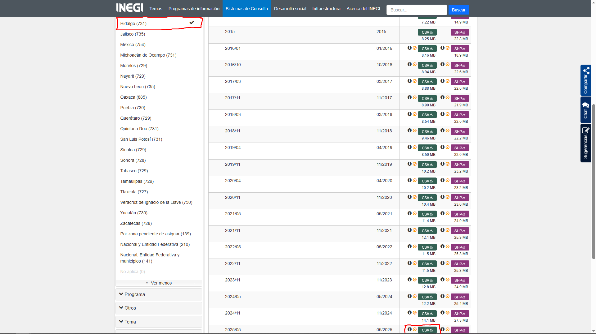
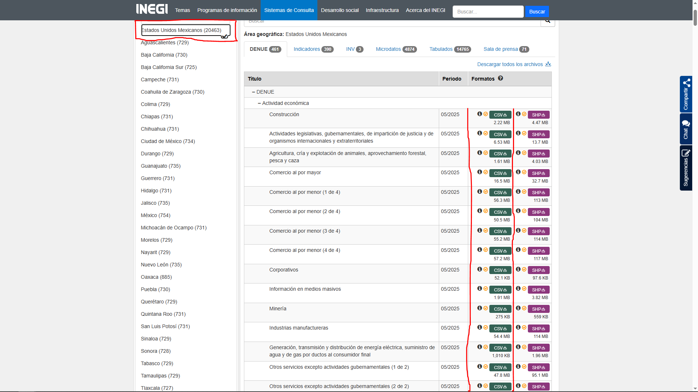
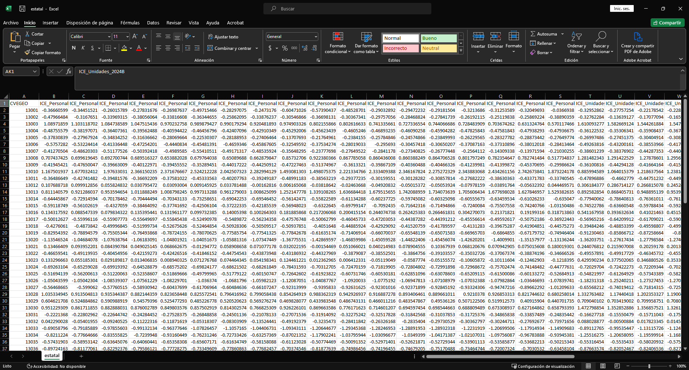

El propósito de este documento es presentar la actualización de los datos correspondientes a los nuevos periodos del Tablero de Complejidad Económica, disponible en SIGEH Hidalgo.
Esta actualización se centra exclusivamente en la obtención e incorporación de los datos que se muestran en las gráficas. No se realizan modificaciones al código de la aplicación, el cual se mantiene desarrollado en Python Dash.
Las ideas y metodologías utilizadas en el tablero se basan principalmente en:
Para el caso de Hidalgo, dentro de la página del DENUE utilizaremos los filtros para seleccionar la entidad y descargar el archivo en formato CSV. En este ejercicio trabajaremos con la base correspondiente a mayo 2025.

Recomendaciones para organizar la información:
Descargar el archivo.
Guardarlo en una carpeta específica (ejemplo: Datos → Originales → Hidalgo).
Renombrar el archivo según el periodo:
2025A → Primer periodo 2025.
2025B → Segundo periodo 2025.
Por otro lado, cuando es a nivel nacional dentro de la página del DENUE utilizaremos los filtros para seleccionar Estados Unidos Mexicanos y descargar los 25 archivos CSV.

Recomendaciones para organizar la información:
Descargar los archivos.
Guardarlo en una carpeta específica (ejemplo: Datos → Originales → Nacional).
Creamos una carpeta según el periodo:
2025A → Primer periodo 2025.
2025B → Segundo periodo 2025.
Añadimos todos los archivos descargados a esa carpeta.
Descomprimir archivos
Descomprime los archivos de Hidalgo. Solo indica la carpeta donde los guardaste y cambia la línea con esa ruta.
directorio ="Datos/Originales/Hidalgo/"archivos_zip =list.files(path = directorio, recursive =TRUE, full.names =TRUE, pattern ="\\.zip")for (zip_file in archivos_zip) { nombre_carpeta = tools::file_path_sans_ext(basename(zip_file))# Carpeta destino destino =file.path(dirname(zip_file), nombre_carpeta)# Crear carpeta si no existeif (!dir.exists(destino)) {dir.create(destino, recursive =TRUE) }# Extraer dentro de la carpetaunzip(zip_file, exdir = destino)message("Extraído: ", zip_file, " → ", destino)}
El Índice de Complejidad Económica (ECI) es una medida de las habilidades y capacidades técnicas implícitas con las que cuenta una región, el cual captura qué tan compleja es una economía identificando tanto las actividades que puede desarrollar con éxito como en qué otros lugares están presentes esas actividades. Una región con un ECI alto indica que las actividades realizadas en la región requieren capacidades técnicas y habilidades más especializadas. El ECI se calculó con una estimación del número de trabajadores en cada industria y el número de unidades económicas dedicadas a cada industria.
El siguiente código muestra cómo calcular el ECI de dos formas:
Usando la estimación de personal de trabajadores por industria.
Usando el número de unidades económicas.
No se explicará en detalle cómo funciona el código.
El resultado debe ser un data.frame con 3 columnas:
CVEGEO
ICE_Personal_2025A
ICE_Unidades_2025A
Nota: El nombre de las columnas depende del periodo que descargaste. Por ejemplo:
Si descargaste 2025A se llamarán ICE_Personal_2025A y ICE_Unidades_2025A.
Si fuera 2025B, entonces serían ICE_Personal_2025B y ICE_Unidades_2025B.
Como es una actualización del tablero, necesitas tener antes los Índices de Complejidad Económica previos, que en este caso están en el archivo estatal.csv. El archivo se visualiza asi:

Asi que adjuntaremos lo obtenido previamente ha dicho archivo.
ICE_previo =read.csv("Datos/Procesados/Antiguos/estatal.csv")personal_previo =names(ICE_previo) |>grep(pattern ="ICE_Personal", value = T)personal_previo = personal_previo[length(personal_previo)] unidades_previo =names(ICE_previo) |>grep(pattern ="ICE_Unidades", value = T)unidades_previo = unidades_previo[length(unidades_previo)]cat("El ultimo realizado ICE Personal es: ", personal_previo, "\n")
El ultimo realizado ICE Personal es: ICE_Personal_2024B
PENDIENTE PORQUE ES EL QUE CONSUME MAS RECURSOS Y MAS TARDADO.
Diversidad y Ubicuidad promedio.
Diversidad indica el número de actividades económicas en las que está especializada cada entidad.
Ubicuidad indica cuántas entidades están especializadas en cada actividad económica.
Las entidades peor posicionadas están en el primer cuadrante (superior derecha), donde muestran baja diversidad y alta ubicuidad. En contraste, las entidades que se posicionan mejor se encuentran en el cuarto cuadrante (inferior derecha), caracterizado por alta diversificación y baja ubicuidad.
No se explicará en detalle cómo funciona el código.
El resultado debe ser un data.frame con 3 columnas:
CVE_MUN
diversidad_2025A
especializado_2025A
Nota: El nombre de las columnas depende del periodo que descargaste. Por ejemplo:
Si descargaste 2025A se llamarán diversidad_2025A y especializado_2025A.
Si fuera 2025B, entonces serían diversidad_2025B y especializado_2025B.
Como es una actualización del tablero, necesitas tener antes los Índices de Complejidad Económica previos, que en este caso están en el archivo dive_vs_ubi_6_mun.csv. El archivo se visualiza asi:
Asi que adjuntaremos lo obtenido previamente ha dicho archivo.
diversidad_ubicuidad_previo =read.csv("Datos/Procesados/Antiguos/dive_vs_ubi_6_mun.csv")diversidad_ubicuidad_actualizado =merge(x = diversidad_ubicuidad_previo, y = datos_grafica, by ="CVE_MUN")write.csv(diversidad_ubicuidad_actualizado, "Datos/Procesados/Actualizados/dive_vs_ubi_6_mun.csv", row.names = F, fileEncoding ="UTF-8")